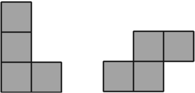
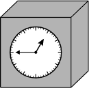
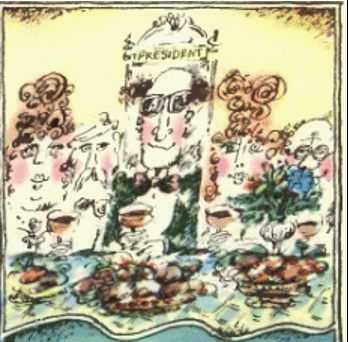

Задача 6.1. На доску выписали 20 различных натуральных чисел. Оказалось, что среди них 11 чисел делятся на 13, а 13 чисел делятся на 11. Докажите, что среди них есть число, большее 500.
Задача 6.2. Утром в луже плавало 20 синих и 11 красных амеб. Иногда они сливались: если сливаются две красные, то получается одна синяя амеба, если сливаются две синие, то получившаяся амеба тут же делится и в итоге образуются 4 красные амебы, наконец, если сливаются синяя и красная амебы, то это приводит к появлению трех красных амеб. Вечером в луже оказалось 50 амеб. Сколько среди них синих?
Задача 6.3. Река Меандровка, имеющая много излучин, пересекает прямолинейное шоссе под несколькими мостами. Обязательно ли найдутся два моста, соседние и по реке, и по шоссе? (Мосты называются соседними по реке, если на участке реки между ними нет других мостов; мосты называются соседними по шоссе, если на участке шоссе между ними нет других мостов. Других рек и дорог в этой местности нет.)
Задача 6.4. На фестивале камерной музыки собралось шесть музыкантов. На каждом концерте часть музыкантов выступает, а остальные слушают их из зала. За какое наименьшее число концертов каждый из шести музыкантов сможет послушать (из зала) всех остальных?
Задача 6.5. Можно ли расставить числа в клетках прямоугольника 4 × 5 так, чтобы в каждой фигурке из четырёх клеток вида «L» сумма чисел была равна 6, а в каждой фигурке вида «S» сумма чисел была равна 7? \begincenter 
 Задача 6.6.
Настольные часы имеют форму куба с круглым циферблатом в центре одной из граней. На корпусе часов нет никаких пометок, показывающих, где у них верх, а на циферблате есть деления, но нет цифр. Поэтому иногда кто-то случайно
может поставить часы на бок или даже вверх ногами.
а)
Какое время показывают часы на рисунке?
б)
Есть ли в сутках хотя бы один такой момент, когда нельзя будет определить, какое время показывают эти часы?
Задача 6.7.
За круглым столом сидят 15 гостей так, что любой из них сидит рядом со своими знакомыми.
а)
Может ли быть так, что каждый из гостей знаком ровно с шестерыми из остальных?
б)
А может ли вдобавок быть так, что среди гостей нет трёх попарно знакомых?
Задача 6.8.
а)
На шахматной доске расставлено 15 фигур так, что \it в каждом горизонтальном и в каждом вертикальном ряду стоит хотя бы одна фигура. Докажите, что с доски можно убрать одну фигуру так, что оставшиеся фигуры будут удовлетворять тому же требованию.
б)
А если фигур 14?
Дополнительные задачи
Задача 6.9. Дано 27 кубиков одинакового размера: 9 красных, 9 синих и 9 белых. Можно ли сложить из них куб таким образом, чтобы каждый столбик из трёх кубиков содержал кубики ровно двух цветов? (Рассматриваются столбики, параллельные всем ребрам куба, всего 27 столбиков.)
Задача 6.10. По случаю избрания Мирафлореса президентом Анчурии был устроен роскошный обед. За круглый стол сели 666 гостей, большинство из которых были лысыми. Назовём двоих сидящих по обе стороны от каждого гостя его соседями; двоих сидящих через одного от него по обе стороны,— его «вторыми соседями» и так далее. Мирафлорес заметил, что для каждого лысого ровно один из его вторых и один из его четвёртых соседей — лысые. Сколько лысых было на обеде?
Задача 6.11. Помощник фокусника просит одного из зрителей написать на доске в ряд N цифр. Затем помощник фокусника стирает ровно две из них. После этого появляется фокусник. Глядя на оставшиеся цифры, фокусник безошибочно отгадывает, что было стёрто. Придумайте, как можно организовать такой фокус. (Фокусник и его помощник заранее выбирают число N таким, каким им удобно; фокусник видит, на каких местах стояли стёртые цифры.)
Задача 6.12. В каждой клетке квадрата 101 × 101, кроме центральной, стоит один из двух знаков: "поворот" или "прямо". Машинка въезжает извне в произвольную клетку на границе квадрата, после чего ездит параллельно сторонам клеток, придерживаясь двух правил: \beginenumerate \item в клетке со знаком "прямо" она продолжает путь в том же направлении; \item в клетке со знаком "поворот" она поворачивает на 90° (в любую сторону по своему выбору). \endenumerate Центральную клетку квадрата занимает дом. Можно ли расставить знаки так, чтобы у машинки не было возможности врезаться в дом?